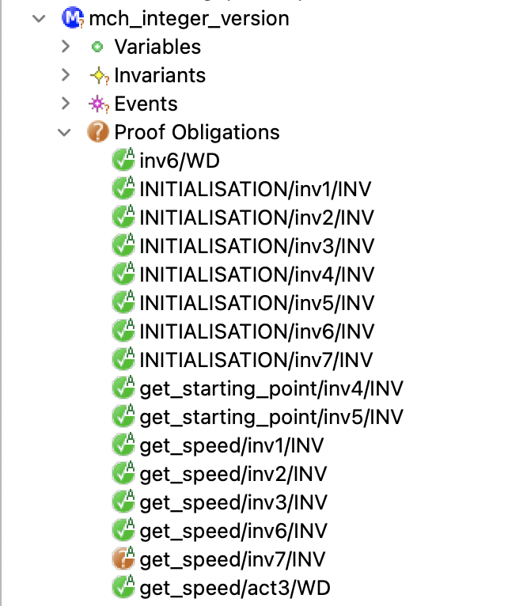

A Generic Event-B Theory for the Formalisation
of the International System of Units
This work was supported by a grant from the French national research agency ANR-19-CE25-0010 - EBRP Project.
$18^{th}$ International Conference on Verification and Evaluation of Computer and Communication Systems
Centre d'intégration Nano-INNOV - CEA-LIST, Palaiseau, France 5-6 November 2025
Centre d'intégration Nano-INNOV - CEA-LIST, Palaiseau, France 5-6 November 2025

The Event-B method

- The Event-B method is an evolution of the classical
B method.
- modeling a system by a set of events instead of operations.
- The Event-B method is a formal method based on
first-order logic and set theory. - The Event-B method is based on :
- the notions of pre-conditions and post-conditions (Hoare),
- the weakest pre-condition (Dijkstra),
- and the calculus of substitution (Abrial).
Using Event-B method
- The Event-B method is adapted to analyse discrete systems.
- offers the possibility of modelling discrete behaviors.
- The use of the Event-B method has continued to increase.
- applied to various applications and domains.
- railway, automotive, aeronautics, cybersecurity, nuclear-energy, ...
-
The Rodin platform (an Eclipse-based IDE)
is intended to support the construction and verification of Event-B models.- plugins for éditing, generating proof obligations,
proving, animating, medel-cheking, code generating ...
- plugins for éditing, generating proof obligations,

The Event-B method
Models and proof obligations
CONTEXT $ctx_1$
EXTENDS $ctx_2$
SETS $s$
CONSTANTS $c$
AXIOMS
$A(s,c)$
THEOREMS
$T(s,c)$
END
MACHINE $mch_1$
REFINES $mch_2$
SEES $ctx_i$
VARIABLES $v$
INVARIANTS
$I(s,c,v)$
THEOREMS
$T(s,c,v)$
EVENTS
$[events\_list]$
END
$event$ $\mathrel{\widehat=}$
any $x$
where
$G(s,c,v,x)$
then
$BA(s,c,v,x,v')$
end
$A(s,c) ~~~\vdash~~~ T(s,c) $
$A(s,c) \land I(s,c,v) ~~~\vdash~~~ T(s,c,v)$
$A(s,c) \land I(s,c,v) \land G(s,c,v,x) ~~~\vdash~~~ \exists v'.BA(s,c,v,x,v')$
$A(s,c) \land I(s,c,v) \land G(s,c,v,x) \land BA(s,c,v,x,v') ~~~\vdash~~~ I(s,c,v')$
$...$
$A(s,c) \land I(s,c,v) ~~~\vdash~~~ T(s,c,v)$
$A(s,c) \land I(s,c,v) \land G(s,c,v,x) ~~~\vdash~~~ \exists v'.BA(s,c,v,x,v')$
$A(s,c) \land I(s,c,v) \land G(s,c,v,x) \land BA(s,c,v,x,v') ~~~\vdash~~~ I(s,c,v')$
$...$
The Event-B method
Static Type Checking
- Event-B supports static type checking using tools such as Rodin or AtelierB.
- These tools generate proof obligations (POs) to check the correct use of arithmetic operations (Well-Defined proof obligations - WD POs).
- WD POs ensure that expressions (axioms, theorems, invariants, guards, actions, etc.) are mathematically well-defined.
- Example $\to$ for the expression $x \div y$, a WD PO ensures that $y \neq 0$.
The Event-B method
The theory plugin
- Theory Plug-in provides capabilities to extend
the Event-B mathematical language and the Rodin proving infrastructure. - An Event-B theory can contain :
- new datatype definitions,
- new polymorphic operator definitions,
- axiomatic definitions,
- theorems,
- associated rewrite and inference rules.
THEORY $thy_1$
IMPORT $thy_2$
DATATYPES
$DT_1,...,DT_n$
OPERATORS
$OP_{11},...,OP_{1n}$
AXIOMATIC DEFINITIONS
operators
$OP_{21},...,OP_{2n}$
axioms
$A$
THEOREMS
$T$
PROOF RULES
$PR$
END
-
Michael J. Butler and Issam Maamria.
Practical theory extension in Event-B. Theories of Programming and Formal Methods. 2013. -
Thai Son Hoang, Laurent Voisin, Asieh Salehi, Michael J. Butler, Toby Wilkinson, and Nicolas Beauger.
Theory plug-in for Rodin 3.x. CoRR, abs/1701.08625, 2017.
The Event-B method
The theory plugin
THEORY $thy_1$
IMPORT $thy_2$
DATATYPES
$DT_1,...,DT_n$
OPERATORS
$OP_{11},...,OP_{1n}$
AXIOMATIC DEFINITIONS
operators
$OP_{21},...,OP_{2n}$
axioms
$A$
THEOREMS
$T$
PROOF RULES
$PR$
END
CONTEXT $ctx_1$ EXTENDS $ctx_2$ SETS $s$ CONSTANTS $c$ AXIOMS $A(s,c)$ THEOREMS $T(s,c)$ END
MACHINE $mch_1$ REFINES $mch_2$ SEES $ctx_i$ VARIABLES $v$ INVARIANTS $I(s,c,v)$ THEOREMS $T(s,c,v)$ EVENTS $[events\_list]$ END
A simple example
System that continuously calculates a moving object's speed
Analysing two functional properties:
- PROP-1 : the velocity of the moving object is equal to the
$distance\_travelled$
divided by the$measured\_time$ ($v = d/t$ ). - PROP-2 : when the
$distance\_travelled$ is strictly positive, the$speed$
of the moving object must also be strictly positive.- the object moves when its
$speed$ is different from zero.
- the object moves when its
The Event-B model
MACHINE mch_integer_version
...
INVARIANTS
@inv1: distance_travelled $\in$ $\mathbb N$ // km
@inv2: measured_time $\in$ $\mathbb N_1$ // s
@inv3: speed $\in$ $\mathbb N$ // km/h
@inv4: starting_position $\in$ $\mathbb N$
@inv5: starting_time $\in$ $\mathbb N$
@inv6: speed $=$ distance_travelled $\div$ measured_time // PROP-1
@inv7: distance_travelled $>$ $0$ $\mathbin\Rightarrow$ speed $>$ $0$ // PROP-2
The Event-B model
MACHINE mch_integer_version
...
EVENTS
...
get_starting_point $\mathrel{\widehat=}$
any p t
where
@grd1: p $\in$ $\mathbb N_1$
@grd2: t $\in$ $\mathbb N_1$
then
@act1: starting_position $:=$ p
@act2: starting_time $:=$ t
end
...
END
MACHINE mch_integer_version
...
EVENTS
...
get_speed $\mathrel{\widehat=}$
any p t
where
@grd1: p $\in$ $\mathbb N_1$ $\land$ p $>$ starting_position
@grd2: t $\in$ $\mathbb N_1$ $\land$ t $>$ starting_time
then
@act1: distance_travelled $:=$ p $-$ starting_position
@act2: measured_time $:=$ t $-$ starting_time
@act3: speed $:=$ (p $-$ starting_position) $\div$ (t $-$ starting_time)
end
END
generated and proven POs
- All POs are green
except the one for maintaining
the$@inv7$ invariant by the$get\_speed$ event. -
PROP 2 $\to$
$distance\_travelled \neq 0$ when$speed \neq 0$ .-
the value of
$distance\_travelled$ can be$\lt$ the value of$measured\_time$ . - the value of
$speed$ can be$= 0$
($distance\_travelled \div measured\_time$ ) while$distance\_travelled \neq 0$
-
the value of
-
No possibility to check the consistency of formulas annotated with measurement units.
- Example: is the unit of
speed (km/h ) the same with the unit of the expressiondistance_travelled $\div$ measured_time (km $\div$ s ) ?
- Example: is the unit of
Challenges in Modelling CPS Systems
- More generally, Cyber-Physical Systems (CPS) models often require variables/expressions, formalising measurements/physics and mechanics laws.
-
Event-B does not support measurements unit annotations for such variables
and using integer variables is not sufficient to handle small values ($0 < v < 1$).- converting from the smallest point of view to the most significant ones
- from
Milli toKilo , for example
-
Formal verification of CPS systems requires a physical measurement model,
e.g. the International System of Units (SI). - Using explicit units improves the CPS validation process by ensuring unit compatibility in arithmetic expressions.
The Objectives
- New syntaxe to formally annotate Event-B variables with measurement units.
- New generaic arithmetic operators for the annotated variables.
- New Well-Defined Proof Obligations (WD POs) to ensure unit consistency.
- Automatic checking of correct unit usage in arithmetic expressions.
-
Example: $d = v / 2~a$
$\to$ must ensure that the unit of $d$ matches that of $v / 2~a$.
Proposed approach

Proposed approach

floating-point numbers
$$
x = 3.14159265359 =
\underset{\text{significand}}{\underbrace{314159265359}} \times
\underset{\text{base}}{\underbrace{10}}^{\overset{\text{exponent}}{\overbrace{-11}}}
$$
We have chosen that the base always equals ten in our models.
$$
x = s(x) \times 10^{e(x)}
$$
- The proposed theory does not model limited precision.
- The operators defined in the theory involve no precision loss.
-
Idir AIT SADOUNE, A Floating-Point Numbers Theory for Event-B.
12th International Conference on Model and Data Engineering, MEDI 2023.
The floating-point numbers theory
THEORY thy_floating_point_numbers
DATATYPES
FLOAT_Type $\mathrel{\widehat=}$ NEW_FLOAT(s $\in$ $\mathbb Z$, e $\in$ $\mathbb Z$) // $x = s(x) \times 10^{e(x)}$
OPERATORS
F0 $\mathrel{\widehat=}$ NEW_FLOAT(0,0) // 0
F1 $\mathrel{\widehat=}$ NEW_FLOAT(1,0) // 10$^{0}$ = 1
$\dots$
MILLI $\mathrel{\widehat=}$ NEW_FLOAT(1,-3) // 10$^{-3}$
CENTI $\mathrel{\widehat=}$ NEW_FLOAT(1,-2) // 10$^{-2}$
DECI $\mathrel{\widehat=}$ NEW_FLOAT(1,-1) // 10$^{-1}$
DECA $\mathrel{\widehat=}$ NEW_FLOAT(1,1) // 10$^{1}$
HECTO $\mathrel{\widehat=}$ NEW_FLOAT(1,2) // 10$^{2}$
KILO $\mathrel{\widehat=}$ NEW_FLOAT(1,3) // 10$^{3}$
$\dots$
eq(x $\in$ FLOAT_Type, y $\in$ FLOAT_Type) INFIX $\mathrel{\widehat=}$ ...
gt(x $\in$ FLOAT_Type, y $\in$ FLOAT_Type) INFIX $\mathrel{\widehat=}$ ...
$\dots$
plus(x $\in$ FLOAT_Type, y $\in$ FLOAT_Type) INFIX $\mathrel{\widehat=}$ ...
mult(x $\in$ FLOAT_Type, y $\in$ FLOAT_Type) INFIX $\mathrel{\widehat=}$ ...
$\dots$
END
The floating-point numbers theory
THEORY thy_floating_point_numbers ... THEOREMS @thm1: $\forall$ x,y $\cdot$ ($...$ $\mathbin\Rightarrow$ x eq y $\mathbin\Leftrightarrow$ y eq x) @thm2: $\forall$ x $\cdot$ ($...$ $\mathbin\Rightarrow$ x geq x $\land$ x leq x) @thm3: $\forall$ x,y $\cdot$ ($...$ x leq y $\land$ y leq x $\mathbin\Rightarrow$ x eq y) @thm4: $\forall$ x,y $\cdot$ ($...$ $\mathbin\Rightarrow$ x leq y $\lor$ y leq x) @thm5: $\forall$ x,y,z $\cdot$ ($...$ x leq y $\land$ y leq z $\mathbin\Rightarrow$ x leq z) @thm6: $\forall$ x,y,z $\cdot$ ($...$ x leq y $\mathbin\Rightarrow$ (x plus z) leq (y plus z)) @thm7: $\forall$ x,y,z $\cdot$ ($...$ x leq y $\mathbin\Rightarrow$ (x mult z) leq (y mult z)) @thm8: $\forall$ x $\cdot$ ($...$ $\mathbin\Rightarrow$ x plus F0 eq x) @thm9: $\forall$ x,y $\cdot$ ($...$ $\mathbin\Rightarrow$ x plus y $=$ y plus x) @thm10: $\forall$ x,y $\cdot$ ($...$ $\mathbin\Rightarrow$ x plus neg(y) $=$ y minus x) @thm11: $\forall$ x $\cdot$ ($...$ $\mathbin\Rightarrow$ x minus F0 eq x) @thm12: $\forall$ x $\cdot$ ($...$ $\mathbin\Rightarrow$ x minus x eq F0) @thm13: $\forall$ x $\cdot$ ($...$ $\mathbin\Rightarrow$ x mult F0 eq F0) @thm14: $\forall$ x $\cdot$ ($...$ $\mathbin\Rightarrow$ x mult F1 $=$ x) @thm15: $\forall$ x,y $\cdot$ ($...$ $\mathbin\Rightarrow$ x mult y $=$ y mult x) @thm16: $\forall$ x $\cdot$ ($...$ $\mathbin\Rightarrow$ inv(x) $=$ F1 div x) @thm17: $\forall$ x $\cdot$ ($...$ $\mathbin\Rightarrow$ x div F1 $=$ x) @thm18: $\forall$ x $\cdot$ ($...$ $\mathbin\Rightarrow$ x div x $=$ F1) @thm19: $\forall$ x $\cdot$ ($...$ $\mathbin\Rightarrow$ x mult inv(x) $=$ F1) ... END
Proposed approach

Dimensions formalisation
- SI System $\to$ a coherent system of measurement based on seven base quantities.
-
Base Quantities:
Time ($T$), Length ($L$), Mass ($M$), Electric current ($I$), Thermodynamic temperature ($\Theta$), Amount of substance ($N$), Luminous intensity ($J$). - Each base quantity corresponds to a base dimension.
- Physical quantities are organized in a system of dimensions.
-
The dimension of any quantity $Q$ is expressed as:
$$dim~Q = T^{\alpha} L^{\beta} M^{\gamma} I^{\delta} \Theta^{\varepsilon} N^{\zeta} J^{\eta}$$
-
the exponents $\alpha, \beta, \gamma, \delta, \varepsilon, \zeta$ and $\eta$
are the dimensional exponents
(can be positive, negative, or zero).
-
the exponents $\alpha, \beta, \gamma, \delta, \varepsilon, \zeta$ and $\eta$
are the dimensional exponents
Dimensions formalisation
DATATYPES
SI_DIMENSION_Type $\mathrel{\widehat=}$ SI_DIMENSION(
exp_d1 $\in$ $\mathbb Z$, // length dimension
exp_d2 $\in$ $\mathbb Z$, // mass dimension
exp_d3 $\in$ $\mathbb Z$, // time dimension
exp_d4 $\in$ $\mathbb Z$, // electric current dimension
exp_d5 $\in$ $\mathbb Z$, // thermodynamic temperature dimension
exp_d6 $\in$ $\mathbb Z$, // amount of substance dimension
exp_d7 $\in$ $\mathbb Z$) // luminous intensity dimension
OPERATORS
L_DIM (exp_d $\in$ $\mathbb Z$) $\mathrel{\widehat=}$ SI_DIMENSION(exp_d,0,0,0,0,0,0) // length quantity
M_DIM (exp_d $\in$ $\mathbb Z$) $\mathrel{\widehat=}$ SI_DIMENSION(0,exp_d,0,0,0,0,0) // mass quantity
T_DIM (exp_d $\in$ $\mathbb Z$) $\mathrel{\widehat=}$ SI_DIMENSION(0,0,exp_d,0,0,0,0) // time quantity
$\dots$
DIM_MULT(dim1 $\in$ SI_DIMENSION_Type, dim2 $\in$ SI_DIMENSION_Type) $\mathrel{\widehat=}$
SI_DIMENSION($\dots$, exp_di(dim1)$+$exp_di(dim2)), $\dots$)
DIM_DIV(dim1 $\in$ SI_DIMENSION_Type, dim2 $\in$ SI_DIMENSION_Type) $\mathrel{\widehat=}$
SI_DIMENSION($\dots$, exp_di(dim1)$-$exp_di(dim2)), $\dots$)
HAVE_SAME_EXP_DIMENSIONS(dim1 $\in$ SI_DIMENSION_Type, dim2 $\in$ SI_DIMENSION_Type) $\mathrel{\widehat=}$
dim1$=$dim2
$\dots$
Proposed approach

Unit of a quantity
-
A unit is formalised using a product of a multiplier with dimension
shifted by an offset: $$ unit = multiplier \times dimension + offset$$ -
Multiplier
- represents prefixes applied to base units.
- examples: milli, centi, deci, deca, kilo, etc.
- used to express multiples or submultiples of a base unit (e.g., $1 km$ = $1000 m$).
-
Offset
- defines a shift relative to a base unit.
- example: the degree Celsius is offset by $273.15$ from the Kelvin ($K$) unit.
- useful for units that are not directly proportional to their base unit.
Unit of a quantity
DATATYPES
SI_UNIT_Type $\mathrel{\widehat=}$ SI_UNIT(multiplier $\in$ FLOAT_Type, dimension $\in$ SI_DIMENSION_Type, offset $\in$ FLOAT_Type)
MEASURE_Type $\mathrel{\widehat=}$ MEASURE(value $\in$ FLOAT_Type, unit $\in$ SI_UNIT_Type)
OPERATORS
UNIT_MULT(u1 $\in$ SI_UNIT_Type, u2 $\in$ SI_UNIT_Type) $\mathrel{\widehat=}$
SI_UNIT(multiplier(u1) mult multiplier(u2), DIM_MULT(dimension(u1), dimension(u2)), F0)
UNIT_DIV(u1 $\in$ SI_UNIT_Type, u2 $\in$ SI_UNIT_Type) $\mathrel{\widehat=}$
SI_UNIT(multiplier(u1) div multiplier(u2), DIM_DIV(dimension(u1), dimension(u2)), F0)
$\dots$
SI_MEASURE_Type(t $\in$ SI_UNIT_Type) $\mathrel{\widehat=}$ {x $\cdot$ x $\in$ MEASURE_Type $\land$ unit(x) $=$ t $\mid$ x}
HAVE_THE_SAME_UNIT(m1 $\in$ MEASURE_Type, m2 $\in$ MEASURE_Type) $\mathrel{\widehat=}$ unit(m1) = unit(m2)
SI_EQ(m1 $\in$ MEASURE_Type, m2 $\in$ MEASURE_Type) $\mathrel{\widehat=}$
wd : HAVE_THE_SAME_UNIT(m1,m2)
def : value(m1) eq value(m2)
$\dots$
SI_PLUS(m1 $\in$ MEASURE_Type, m2 $\in$ MEASURE_Type) $\mathrel{\widehat=}$
wd : HAVE_THE_SAME_UNIT(m1,m2)
def : MEASURE(value(m1) plus value(m2), unit(m1))
$\dots$
SI_MULT(m1 $\in$ MEASURE_Type, m2 $\in$ MEASURE_Type) $\mathrel{\widehat=}$
MEASURE(value(m1) mult value(m2), UNIT_MULT(unit(m1), unit(m2)))
$\dots$
SI_CONVERT(u $\in$ SI_UNIT_Type, m $\in$ MEASURE_Type) $\mathrel{\widehat=}$
wd : HAVE_SAME_EXP_DIMENSIONS(dimension(unit(m)),dimension(u))
def : // v2 $=$ (v1 $-$ o1) $\times$ (m1 $\times$ d1)$/$(m2 $\times$ d2) $+$ o2
Proposed approach

SI base units formalisation
OPERATORS
METRE_UNIT $\mathrel{\widehat=}$ SI_UNIT(F1, L_DIM(1), F0) // m
KILO_GRAM_UNIT $\mathrel{\widehat=}$ SI_UNIT(KILO, M_DIM(1), F0) // kg
SECOND_UNIT $\mathrel{\widehat=}$ SI_UNIT(F1, T_DIM(1), F0) // s
AMPERE_UNIT $\mathrel{\widehat=}$ SI_UNIT(F1, I_DIM(1), F0) // A
KELVIN_UNIT $\mathrel{\widehat=}$ SI_UNIT(F1, O_DIM(1), F0) // K
MOLE_UNIT $\mathrel{\widehat=}$ SI_UNIT(F1, N_DIM(1), F0) // mol
CANDELA_UNIT $\mathrel{\widehat=}$ SI_UNIT(F1, J_DIM(1), F0) // cd
Proposed approach

length units formalisation
OPERATORS
MILLI_METRE_UNIT $\mathrel{\widehat=}$ SI_UNIT(MILLI, L_DIM(1), F0) // mm
CENTI_METRE_UNIT $\mathrel{\widehat=}$ SI_UNIT(CENTI, L_DIM(1), F0) //cm
DECI_METRE_UNIT $\mathrel{\widehat=}$ SI_UNIT(DECI, L_DIM(1), F0) //dm
DECA_METRE_UNIT $\mathrel{\widehat=}$ SI_UNIT(DECA, L_DIM(1), F0) //dam
HECTO_METRE_UNIT $\mathrel{\widehat=}$ SI_UNIT(HECTO, L_DIM(1), F0) //hm
KILO_METRE_UNIT $\mathrel{\widehat=}$ SI_UNIT(KILO, L_DIM(1), F0) //km
$\dots$
Proposed approach

The named derived unit formalisation
- Derived units $\to$ defined as products of powers of base units (dimensions).
- Coherent derived units $\to$ occur when the numerical factor in the product is one.
-
Special coherent derived units $\to$ 22 units in the SI have special names,
e.g. radian, hertz, coulomb, degree Celsius, etc. - These 22 named units are defined by combining the seven base units.
- These 22 coherent derived units + 7 base units form the core of the International System of Units (SI).
OPERATORS
HERTZ_UNIT $\mathrel{\widehat=}$ // 1/s
UNIT_INV(SECOND_UNIT)
COULOMB_UNIT $\mathrel{\widehat=}$ // s A
UNIT_MULT(SECOND_UNIT, AMPERE_UNIT)
NEWTON_UNIT $\mathrel{\widehat=}$ // kg m / s^2
UNIT_MULT(KILO_GRAM_UNIT, UNIT_DIV(METRE_UNIT, UNIT_MULT(SECOND_UNIT,SECOND_UNIT)))
$\dots$
Proposed approach

The other derived unit formalisation
The seven base units and twenty-two units with special names may
be combined
to express the units of other derived physical quantities.
OPERATORS
SQUARE_METRE_UNIT $\mathrel{\widehat=}$ //area m^2
UNIT_MULT(METRE_UNIT, METRE_UNIT)
CUBIC_METRE_UNIT $\mathrel{\widehat=}$ // volume m^3
UNIT_MULT(SQUARE_METRE_UNIT, METRE_UNIT)
METRE_PER_SECOND_UNIT $\mathrel{\widehat=}$ // speed, velocity m/s
UNIT_DIV(METRE_UNIT, SECOND_UNIT)
METRE_PER_SECOND_SQUARED_UNIT $\mathrel{\widehat=}$ // acceleration m/s^2
UNIT_DIV(METRE_UNIT, UNIT_MULT(SECOND_UNIT, SECOND_UNIT))
$\dots$
COULOMB_PER_CUBIC_METRE_UNIT $\mathrel{\widehat=}$ // electric charge density
UNIT_DIV(COULOMB_UNIT, CUBIC_METRE_UNIT) // coulomb/m^3 = s.A/m^3
$\dots$
Non-SI units formalisation
The most used Non-SI units that accepted for use with the SI Units
and that we can find in the official SI Brochure,
can be formalised as a
OPERATORS
NONSI_UNIT(v $\in$ FLOAT_Type, u $\in$ SI_UNITE_Type) $\mathrel{\widehat=}$
SI_UNIT(v mult multiplier(u), dimension(u), offset(u))
MINUTE_UNIT $\mathrel{\widehat=}$ NONSI_UNIT(FLOAT(60), SECOND_UNIT)
HOUR_UNIT $\mathrel{\widehat=}$ NONSI_UNIT(FLOAT(3600), SECOND_UNIT)
HECTARE_UNIT $\mathrel{\widehat=}$ NONSI_UNIT(FLOAT(10000), SQUARE_METRE_UNIT)
LITRE_UNIT $\mathrel{\widehat=}$ NONSI_UNIT(NEW_FLOAT(1,-3), CUBIC_METRE_UNIT)
$\dots$
Refinement based approach
We have used the Event-B refinement to deal separately with the problem
of using small values and the problem of correctly using measurement units.
of using small values and the problem of correctly using measurement units.
- Refinement is an excellent solution to decompose a complex proof.
Revisiting our example I
MACHINE mch_integer_version ... INVARIANTS @inv1: distance_travelled $\in$ $\mathbb N$ @inv2: measured_time $\in$ $\mathbb N_1$ @inv3: speed $\in$ $\mathbb N$ @inv4: starting_position $\in$ $\mathbb N$ @inv5: starting_time $\in$ $\mathbb N$ @inv6: speed = distance_travelled $\div$ measured_time @inv7: distance_travelled $>$ $0$ $\mathbin\Rightarrow$ speed $>$ $0$ ... END
MACHINE mch_floating_point_version ... INVARIANTS @inv1: distance_travelled $\in$ PFLOAT_Type @inv2: measured_time $\in$ PFLOAT1_Type @inv3: speed $\in$ PFLOAT_Type @inv4: starting_position $\in$ PFLOAT_Type @inv5: starting_time $\in$ PFLOAT_Type @inv7: speed eq distance_travelled div measured_time @inv8: distance_travelled gt F0 $\mathbin\Rightarrow$ speed gt F0 ... END
MACHINE mch_floating_point_version
...
INVARIANTS
@inv1: distance_travelled $\in$ PFLOAT_Type
@inv2: measured_time $\in$ PFLOAT1_Type
@inv3: speed $\in$ PFLOAT_Type
@inv4: starting_position $\in$ PFLOAT_Type
@inv5: starting_time $\in$ PFLOAT_Type
@inv6: div_WD(distance_travelled, measured_time)
@inv7: speed eq distance_travelled div measured_time
@inv8: distance_travelled gt F0 $\mathbin\Rightarrow$ speed gt F0
...
END
Revisiting our example II
MACHINE mch_integer_version
...
EVENTS
...
get_speed $\mathrel{\widehat=}$
any p t
where
@grd1: p $\in$ $\mathbb N_1$ $\land$ p $>$ starting_position
@grd2: t $\in$ $\mathbb N_1$ $\land$ t $>$ starting_time
then
@act1: distance_travelled $:=$ p $-$ starting_position
@act2: measured_time $:=$ t $-$ starting_time
@act3: speed $:=$ (p $-$ starting_position) $\div$ (t $-$ starting_time)
end
END
MACHINE mch_floating_point_version
...
EVENTS
...
get_speed $\mathrel{\widehat=}$
any p t
where
@grd1: p $\in$ PFLOAT_Type $\land$ p gt starting_position
@grd2: t $\in$ PFLOAT_Type $\land$ t gt starting_time
then
@act1: distance_travelled $:=$ p minus starting_position
@act2: measured_time $:=$ t minus starting_time
@act3: speed $:=$ (p minus starting_position) div (t minus starting_time)
end
END
MACHINE mch_floating_point_version
...
EVENTS
...
get_speed $\mathrel{\widehat=}$
any p t
where
@grd1: p $\in$ PFLOAT_Type $\land$ p gt starting_position
@grd2: t $\in$ PFLOAT_Type $\land$ t gt starting_time
@grd3: div_WD(p minus starting_position, t minus starting_time)
then
@act1: distance_travelled $:=$ p minus starting_position
@act2: measured_time $:=$ t minus starting_time
@act3: speed $:=$ (p minus starting_position) div (t minus starting_time)
end
END
generated and proven POs

- All generated POs have been proven.
- The get_speed/inv8/INV
PO becomes
✔ .- thanks to handling small values (
$]0..1[$ ), - and to the new arithmetic operators specifications.
- thanks to handling small values (
The floating-point numbers theory is more suitable than the basic integers of Event-B.
The annotated model
MACHINE mch_annotated_version REFINES mch_floating_point_version ... INVARIANTS @inv1: si_distance_travelled $\in$ SI_MEASURE_Type(METRE_UNIT) @inv2: si_measured_time $\in$ SI_MEASURE_Type(SECOND_UNIT) @inv3: si_speed $\in$ SI_MEASURE_Type(METRE_PER_SECOND_UNIT) @inv4: si_starting_position $\in$ SI_MEASURE_Type(METRE_UNIT) @inv5: si_starting_time $\in$ SI_MEASURE_Type(SECOND_UNIT) @glueing-1: value(si_distance_travelled) $=$ distance_travelled @glueing-2: value(si_measured_time) $=$ measured_time @glueing-3: value(si_speed) $=$ speed ... EVENTS ... get_speed $\mathrel{\widehat=}$ any si_p si_t where @grd1: si_p $\in$ SI_MEASURE_Type(METRE_UNIT) $\land$ si_p SI_GT si_starting_position @grd2: si_t $\in$ SI_MEASURE_Type(SECOND_UNIT) $\land$ si_t SI_GT si_starting_time @grd3: div_WD(...) with value(si_p) $=$ p $\land$ value(si_t) $=$ t then @act1: si_distance_travelled $:=$ si_p SI_MINUS si_starting_position @act2: si_measured_time $:=$ si_t SI_MINUS si_starting_time @act3: si_speed $:=$ (si_p SI_MINUS si_starting_position) SI_DIV (si_t SI_MINUS si_starting_time) end END
The annotated model
MACHINE mch_annotated_version REFINES mch_floating_point_version
...
INVARIANTS
@inv1: si_distance_travelled $\in$ SI_MEASURE_Type(METRE_UNIT)
@inv2: si_measured_time $\in$ SI_MEASURE_Type(SECOND_UNIT)
@inv3: si_speed $\in$ SI_MEASURE_Type(METRE_PER_SECOND_UNIT)
@inv4: si_starting_position $\in$ SI_MEASURE_Type(METRE_UNIT)
@inv5: si_starting_time $\in$ SI_MEASURE_Type(SECOND_UNIT)
@glueing-1: value(si_distance_travelled) $=$ distance_travelled
@glueing-2: value(si_measured_time) $=$ measured_time
@glueing-3: value(si_speed) $=$ speed
...
EVENTS
...
get_speed $\mathrel{\widehat=}$
any si_p si_t
where
@grd1: si_p $\in$ SI_MEASURE_Type(METRE_UNIT) $\land$ si_p SI_GT si_starting_position
@grd2: si_t $\in$ SI_MEASURE_Type(SECOND_UNIT) $\land$ si_t SI_GT si_starting_time
@grd3: div_WD(...)
with
value(si_p) $=$ p $\land$ value(si_t) $=$ t
then
@act1: si_distance_travelled $:=$ si_p SI_MINUS si_starting_position
@act2: si_measured_time $:=$ si_t SI_MINUS si_starting_time
@act3: si_speed $:=$ (si_p SI_MINUS si_starting_position) SI_DIV (si_t SI_MINUS si_starting_time)
end
END
Rodin generates a large number of WD POs, verifying the correct use of measurement
units associated with variables that appear in different arithmetic expressions.

Conclusion and future work
Proposed Approach
Future Work
- Extension of the Event-B type-checking system using the Theory plugin
- Integration of standard units of measurement (SI units)
- A generic theory as a support for :
- the seven base units
- derived units (named or not)
- arithmetic operators adapted for unit-based expressions
Future Work
- Application to a more complex case study (autonomous vehicles)
-
Planned integration into our framework OntoEventB
- for automatic generation of Event-B models from ontologies